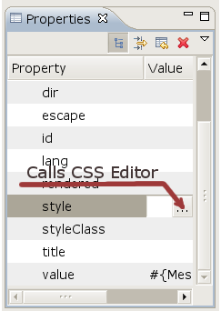
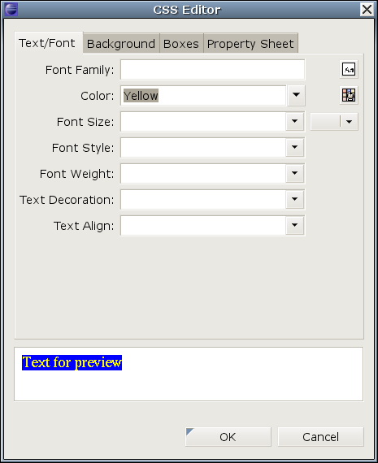

An CSS Editor was added for editing inline styles for elements that has a style attribute.
It is started by selecting an element in VPE and then via the properties view find the style attribute and click ... to start the dialog.

The editor dialog has four tabs where CSS properties for text, color, position and others can be specified and adjusted.
The quick edit tab shows just the edited properties, removing the need to browse multiple tabs to adjust an existing styling.
The bottom of dialog a preview is continously updated while the styling are adjusted.

|